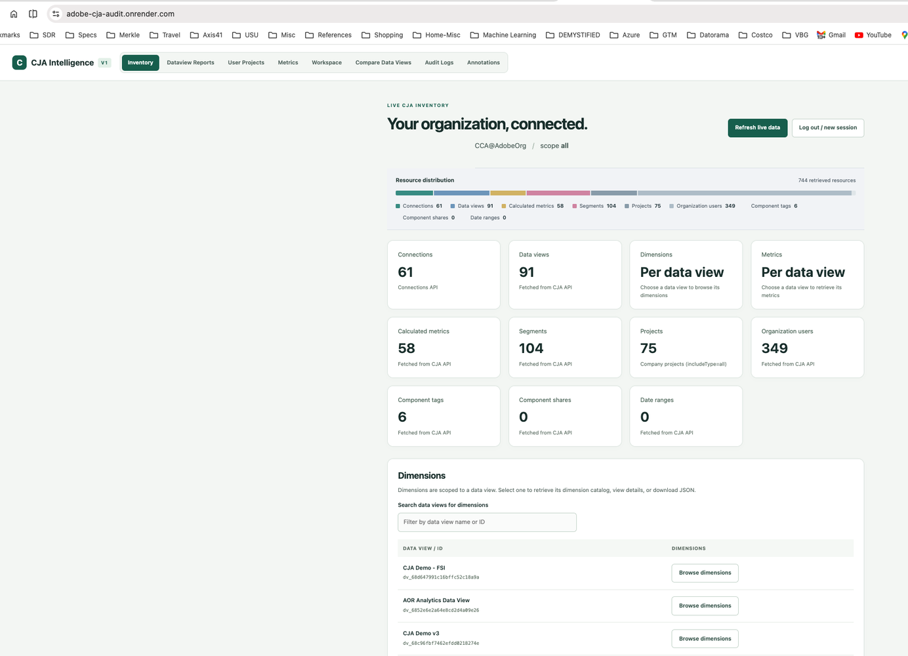
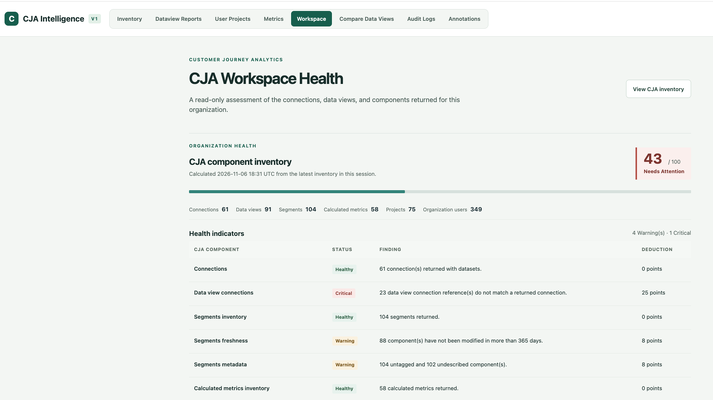
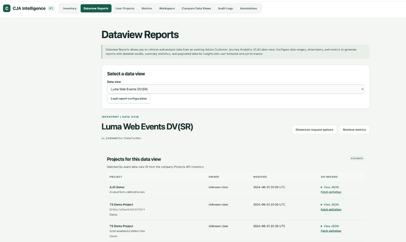
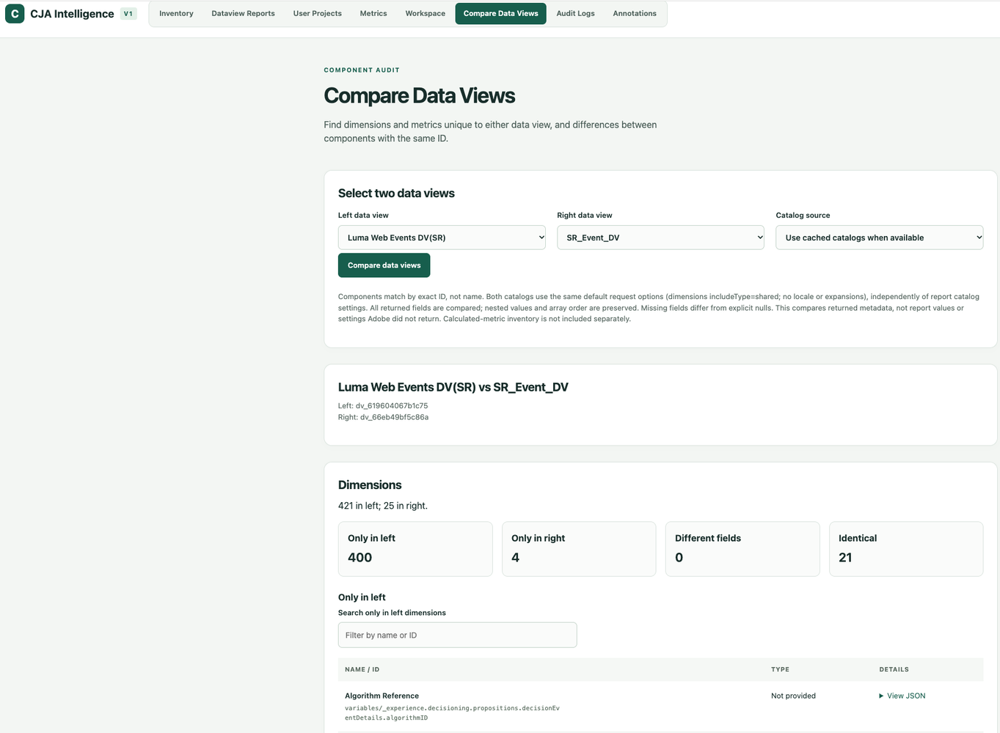
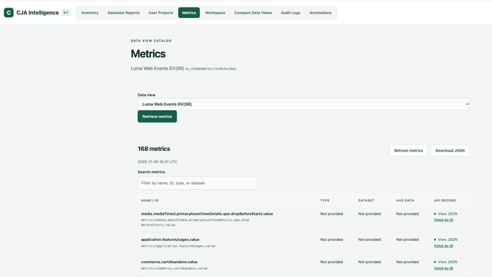
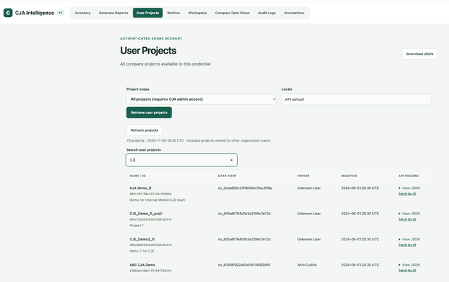
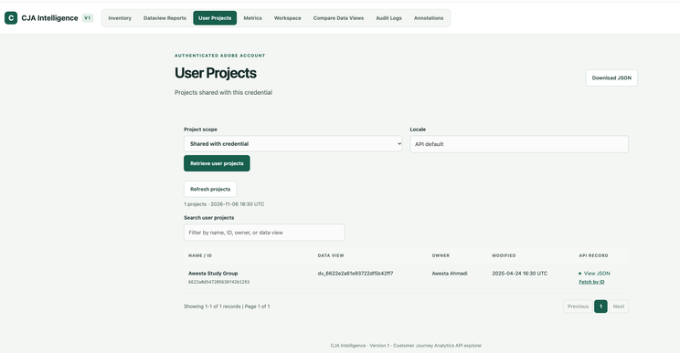
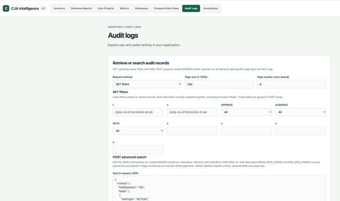
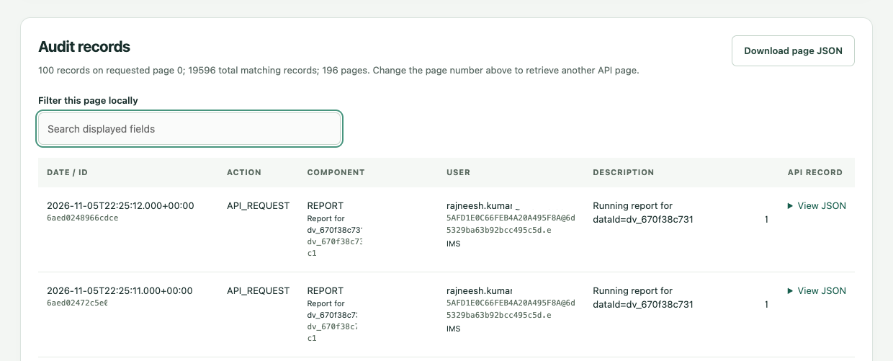
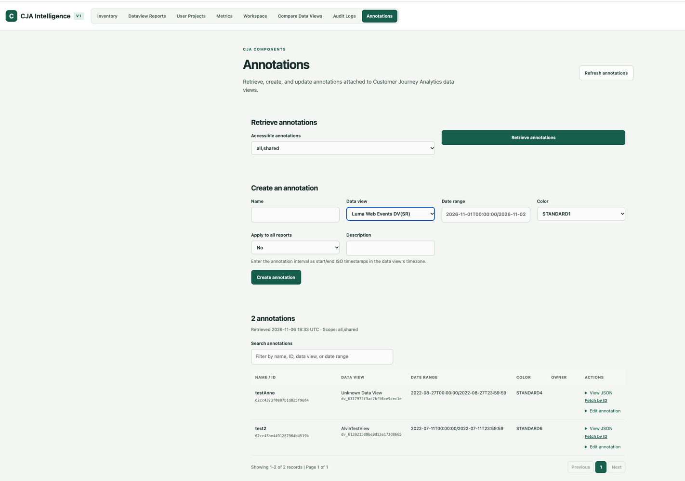

Customer Journey Analytics (CJA) makes it possible to answer detailed questions about customer behavior, but its configuration can be hard to see at a glance. A single organization can have dozens of connections, data views, segments, and calculated metrics, plus projects and users spread across teams. Answering “Which data views point to a connection that no longer exists?” or “Which segments haven’t been touched in a year?” often means clicking through the interface one object at a time.
I built CJA Intelligence to make that inventory easier to see, search, and explore. You can try it at adobe-cja-audit.onrender.com.
One connected view of the organization
After you connect with Adobe OAuth Server-to-Server credentials, the app loads live results from every CJA API endpoint group: connections, data views, dimensions, metrics, calculated metrics, segments, date ranges, component tags and shares, projects, users, annotations, and audit logs. The dashboard shows a resource distribution bar and counts for each group. Each table is searchable and paginated, and every record can be inspected as JSON, fetched by ID, or downloaded.
Failures are handled openly. If an endpoint fails, its count shows as Unavailable rather than zero, so a partial result never looks like a complete one.

Health checks that explain themselves
The Workspace page scores the organization’s CJA component inventory from 0 to 100. The score starts at 100 and deducts points for each warning or critical finding, and each finding is listed with its deduction. In a real check, the app flagged 23 data view connection references that did not match a returned connection, a critical issue that cost 25 points. It also flagged segments that hadn’t been modified in more than a year and segments with no tags or descriptions.
These are review heuristics, not an official Adobe certification. The score can’t tell you whether reports are accurate or whether site events reach CJA, so it’s best used as a prompt for investigation.

Explore data views and reports
Dataview Reports lets you choose an existing data view, load its dimensions and metrics, and build a report with a date range, up to 20 metrics, optional segments, and row limits. Date dimensions produce trended reports, and other dimensions produce ranked ones. Each metric gets summary insights such as its total, top item and share, and period-over-period change. You can download the latest report as CSV, JSON, or Word, along with the exact request sent to CJA.

Compare Data Views matches dimensions and metrics by exact component ID and shows what exists only in one view, what is shared, and which fields differ. Missing fields are distinguished from explicit nulls, so a difference is never a guess.

Metrics retrieves the full metric catalog for a data view, including every page of results, and lets you search and download it.

Projects, users, and audit logs
User Projects lists the company projects available to your credential, with a scope selector for all projects or only those shared with you. Each data view page also lists the projects that reference it.


Audit logs supports both simple filters and advanced nested AND/OR searches. Queries run only when you request them, so opening the page doesn’t pull logs.


Changes are limited on purpose
Most of the app is read-only. The exception is Annotations, where you can create annotations and partially update existing ones. Since annotations change what appears in CJA reports, the app asks you to review the data view, date interval, and scope before saving. It does not offer a delete button.

Privacy and session handling
Credentials, tokens, inventory, and reports stay in server memory for your browser session. The browser receives only an opaque, HTTP-only cookie. Logging out clears that session, and sessions expire after a period of inactivity. Tokens and credentials are never written to logs or files.
Because the app contains live organization data, the same care applies to exports and screenshots. Downloaded reports can include user names, emails, and configuration details.
Who it’s for
If you manage CJA across several teams, run regular governance reviews, or need to understand why two data views behave differently, CJA Intelligence can give you a faster starting point. Connect with your own Adobe credentials to explore your organization, and review the code and documentation before using it with production data.
Try it at adobe-cja-audit.onrender.com, and I’d welcome feedback on what would make it more useful for your team.
#CustomerJourneyAnalytics #AdobeAnalytics #CJA #DigitalAnalytics #MarTech #DataGovernance